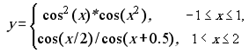

Варіант 11
11.1.Обчислити значення функції у, розвинувши функцію cos(x) у ряд Тейлора.
Аргумент х змінюється від -2 до 3 з кроком 0.5. Визначити похибкуОбчислити
значення функції у, розвинувши функцію cos(x) у ряд Тейлора. Аргумент х
змінюється від -2 до 3 з кроком 0.5. Визначити похибку

11.2 Ввести з клавіатури натуральне число n . Необхідно отримати всі
досконалі числа, менші за n . Досконалим називається число, значення
якого дорівнює сумі всіх його дільників